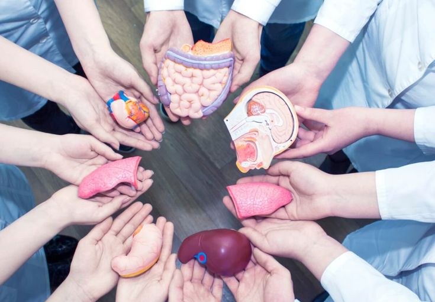

When kidney disease has progressed to end stage kidney failure, a kidney transplant is a positive option. If the patient is below 55 years of age (or 60 if in very good health), then this is likely the best option, compared with a lifetime on dialysis. Compared with dialysis, a kidney transplant is associated with:
- Better quality of life
- Lower risk of death
- Fewer dietary restrictions
- Lower treatment cost

Transplant Procedure
The procedure starts with a thorough inspection of your health and imaging studies, as well as testing that the donated kidney is a match on blood type, tissue type (organ will not be rejected), and antibody reaction. Prior to the surgery, the patient is advised to keep a very healthy lifestyle based on diet, exercise, and not smoking.
Kidney transplants are performed with general anesthesia, so you're not awake during the procedure. The surgical team monitors your heart rate, blood pressure and blood oxygen level throughout the procedure.
During the surgery:
- The surgeon makes an incision in the lower part of one side of the abdomen and places the new kidney into the body. Unless your own kidneys are causing complications such as high blood pressure, kidney stones, pain or infection, they are left in place.
- The blood vessels of the new kidney are attached to blood vessels in the lower part of the abdomen, just above one of your legs.
- The new kidney's ureter — the tube that links the kidney to the bladder — is connected to the bladder.
Post-Operation
After the transplant, your new kidney will start functioning and you would be off dialysis soon. Your incision site would feel sore and you should avoid lifting heavy objects, strenuous exercise (other than walking), and returning to work, for about 6-8 weeks.
You would have regular checkups with your doctor. You would take medications regularly to suppress rejection of your new kidney, and might need antibacterial and antiviral medications.
After your transplant, you will need to keep your kidneys healthy by managing what you eat (e.g. have fruit and vegetables, fiber, low-fat milk and dairy, and lean/healthy meats), limiting sugar and salt, avoiding smoking, and staying hydrated. Do avoid grapefruit due to its effect on immunosuppression medications.
Soon after your transplant, you should walk as much as you can, and gradually progress to exercising five days a week in low-impact exercises.

Kidney Donor
Kidney transplants are rare, due to the cost, as well as the need for a donor. Only one donated kidney is needed to replace two failed kidneys. Therefore, living donors from family and kin are the most likely donors. The Hope Kidney Foundation seeks to promote more awareness of kidney and organ donation upon death, to increase availability of transplants and saving lives. When a donor kidney is available, we will provide a kidney transplant free of cost, by utilizing volunteer surgeons, facilities, and donations.